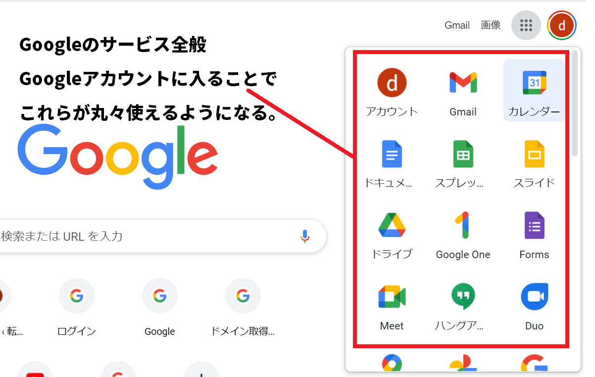
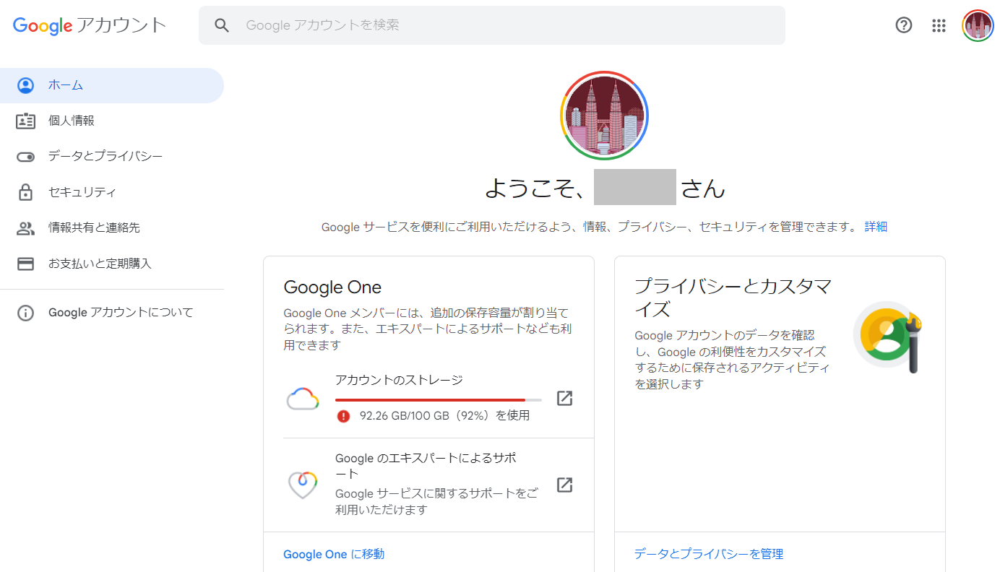
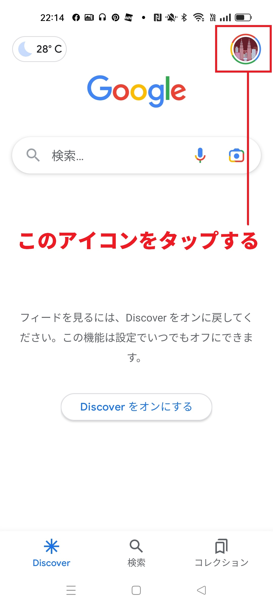
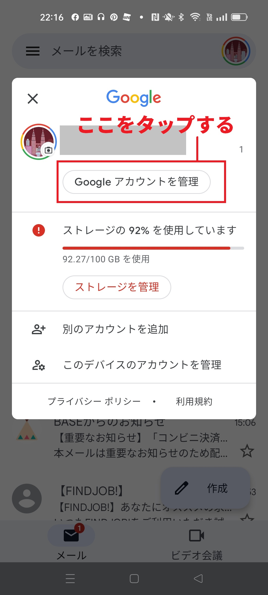

一体何のこと？googleアカウントとは？
Googleが提供する「Googleアカウント」というサービス。このサービスが一体どんなサービスなのか、良くわからない方も多いと思います。
簡単に説明をすると、Googleアカウントとは「Gmail」「Googleドライブ」といったGoogleが無料で提供している10種類以上のWebサービスが利用できるようになる
アカウントになります。
実際にはWebサービスを利用する以外にも出来ることがあります。
サービス内容がわかりづらいため、何が出来るのか？どこで使うのか？いまいちわからない人も多いのではないでしょうか。
このGoogleアカウント。その概要や出来ることについて解説をしていきます。
Googleアカウントはどんな時に使うの？どんなことが出来るの？
まず、Googleアカウントを作ると、次のことが出来ます。
Gmail、Googleドライブ、Googleドキュメントなど10種類以上のソフトが無料で利用出来る
Googleアカウントを作るとGmailでメールが出来たり、Googleドライブに動画や写真を保存することが出来ます。
さらにGoogleドキュメントのような資料作成ソフトで資料の作成も出来るようになります。
次の画面はPC版のGoogleの画面になりますが、
右上にあるルービックキューブのようなアイコンをクリックすると、Googleで提供されているサービスが一括表示されるようになっています。
これらはどれもGoogleが提供しているサービスになりGoogleアカウントを登録することで利用できるソフトになっています。
（一部はGoogleアカウントなしでも起動します）

実際にGoogleアカウントで利用できるサービスは以下になります。
- Gmail：Webメール
- Google ドライブ：オンラインストレージ
- Google ドキュメント：Word
- Google スプレッドシート：Excel
- Google スライド：PowerPoint
- Google カレンダー：スケジュール共有
- Google Meet：Zoom
- Google フォーム：フォームサービス
- その他
GmailのようなWebメールサービス、オンラインストレージ、さらにはMicrosoftのワード、エクセルのような資料作成系の
ソフトまで何でも揃っています。驚きなのはこれらのサービスが無料で利用できてしまうことでしょう。
各サービスを使うのも簡単で、前述の画面から各サービスのアイコンをクリックしただけでソフトが立ち上がります。
スマートフォンであれば専用アプリを入れておけば、より簡単にソフトを利用することが出来ます。
Google製のブラウザ「chrome」にサインインできる
Googleが提供しているブラウザの「chrome」を使う時もGoogleアカウントでサインインすることが出来ます。
サインインする1番のメリットは「お気に入り」のサイト情報をどこでも同じ状態で確認できることでしょう。
たとえ外出先の初めて使うパソコンであってもchromeにサインインすれば、自宅のパソコンの環境と同じ環境でお気に入りサイトを回ることが出来ます。
一方でサインインした状態では履歴情報も残ってしまいます。外出先であってもサインインしている状態で回った履歴情報は残ってしまうことを知っておきましょう。
また、ちゃんとサインアウトした状態にしておかないと次にchromeを使う方が情報を確認できてしまうので、この点にも注意しましょう。
Youtubeにもサインインできる
YoutubeもGoogleが提供するサービスになりますのでGoogleアカウントでサインインすることが出来ます。サインインした場合は自宅と同じ環境でyoutubeができます。
普段回っているチャンネルなども、そのまま同じ状態でYoutubeをすることが出来ます。
chromeにしてもYoutubeにしても無理をしてGoogleアカウントでサインインをする必要はありません。
どうしても外出先のパソコンやスマホを使う時に、いつもの環境と同じにしたい場合にサインインしましょう。
履歴情報やプライバシー情報を管理できる
Googleアカウントの管理画面に入ると、サインインする際のパスワードなどのセキュリティ情報、chromeやYoutubeの履歴情報、各サービスを使った時の位置情報、
有料プランなどの課金情報などの確認や設定変更ができます。

Googleアカウントの作成方法
Googleアカウントは無料で簡単に作ることが出来ます。10分ほどあれば新しいGoogleアカウントが作れるでしょう。また複数のアカウントを作ることも出来ます。
自分だけでなく家族向けのGoogleアカウント（12歳以下は作れません）や自分の2つ目のアカウントを作ることも出来ます。
作り方については以下のページで解説しています。
→Googleアカウント（Gmail）の作成方法
Googleアカウントの特徴
Gmailの作成は、実はGoogleアカウントを作成しているのと同じ
現在、多くの人がGmailのアカウントを作ってメールをしていると思いますが、
このGmailのアカウント、実はGoogleアカウントそのものになります。
多くの方はGmailの専用アカウントを作って、Gmail専用のパスワードで毎回管理画面に入っていると感じていると思いますが、
実際にはGoogelアカウントのパスワードでGmailに入っているイメージになります。
そのため、Gmailを作った時のメールアドレスとパスワードで（これはGoogleアカウントなので）そのままchromeのサインインやYoutubeのサインインすることが出来ます。
Webサービスのデータは常に同期されているので、どのパソコンから入っても同じ情報で確認できる
Googleアカウントで利用できるWebサービス。たとえばGmail、Googleドキュメント、Googleスプレッドシートなどのデータは常に同期されています。
同期について詳しく説明すると、どのデバイスでGmailを開いても、常に最新の状態でデータが確認できることを意味します。
そのため、外出先のパソコンでGmailを開いても、同じ時間に自宅でパソコンを開いても同じ状態でメールをすることが出来ます。
もし、この時自宅のパソコンでメールを送付すれば、外出先のパソコンでも同じメール情報が残ります。
Googleアカウントの管理画面に入る方法（PC版）
パソコンからGoogleアカウントにログインできる方法を3つ紹介します。まずはPC版での入り方。次にスマホ版での入り方について解説します。
１．Googleホームページから入る（Google）
まず、GoogleのホームページにはGoogleアカウントに入るアイコンが用意されています。これはPC版でもスマホ版でも同様になります。
パソコン版の画面の場合は、右上にあるアイコンからGoogleアカウントに入ることが出来ます。
２．Gmailから入る（Gmail）
Gmailで使うIDとパスワードが、実はGoogleアカウントそのもので同じものだということは説明をしました。
そのため、Gmailにログインした時点で同時にGoogleアカウントにもログインしている状態になります。
実はGmailの画面内にも、ルービックキューブのアイコンが設置されていて、そこから各ソフトを起動することが出来るようになっています。
３．Googleアカウントの特設ページから入る（Googleアカウント）
Googleアカウントには専用サイトが用意されています。そのためGoogleアカウントの専用サイトからログインすることが出来ます。
Googleアカウントの管理画面に入る方法（スマホ版）
スマートフォンでGoogleアカウントに入る場合、最も簡単な方法はGmailアプリとGoogleアプリから入る方法になります。
１．Gmailアプリ、Googleアプリ、chromeアプリから入る
GmailアプリやGOOGLEアプリ、chromeアプリを開くと、画面右上にアイコンが表示されています。このアイコンをタップして、さらに「Googleアカウントを管理」をタップすることで
Googleアカウントの管理画面に入れます。


類似サービス
Googleアカウントと類似したサービスとしてMicrosoftアカウントがあります。MicrosoftアカウントとGoogleアカウントはとても内容が似ています。
WebメールであるOutlookメール。オンラインストレージであるOneドライブ。資料作成ソフトのWordやECXELなど。様々なWebサービスが無料のMicrosoftアカウントを
作るだけで利用できます。
この記事の著者・プロフィール
Web制作を始めて約19年になります（HTML/css、Photoshop、Webマーケティング）。2005年から当サイトの運営を開始。
これまでに300個以上のドメインを取得、10社を超えるレンタルサーバーを利用してきました。